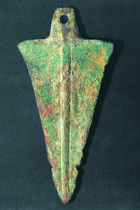
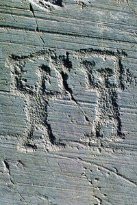

Lezione 1  La preistoria
La preistoria

-
280
280
-
340
100
-
290
210
-
240
230
-
215
125
-
410
570

ANATOLIA
La lama di un pugnale in rame: del III millennio a.C. I più antichi oggetti in rame furono ritrovati in Anatolia.AFRICA NORD OCCIDENTALE
L’Africa Nord-Occidentale fu uno dei primi luoghi in cui si comincia a lavorare il ferro, sempre intorno al 1200 a. C.GRECIA
Le prime tracce della lavorazione del ferro in Europa risalgono al periodo chiamato Medioevo ellenico, attorno al 1200 a.C.BULGARIA
A partire dal 3000 a. C nella regione balcanica la lavorazione del rame ha uno sviluppo importante.
VAL CAMONICA
Questa incisione rupestre della Val Camonica, risalente all’età del ferro e raffigurante due guerrieri impegnati in un duello, testimonia l’uso ormai comune di armi in metallo lavorato.INDIA
Anche in India sono avvenuti ritrovamenti di oggetti in ferro lavorato risalenti a poco più di 3000 anni fa.